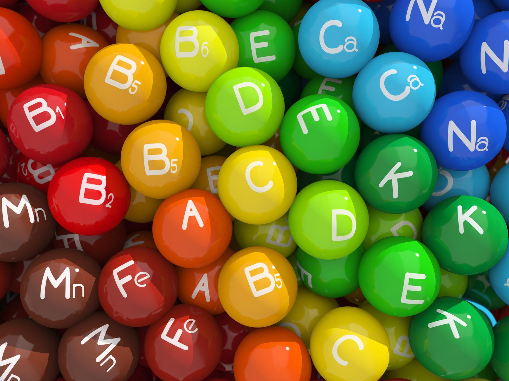

4.1 Organiczne składniki pokarmowe
fiber_manual_record
Funkcje organicznych składników pokarmowych: cukrów, białek i tłuszczów
fiber_manual_record
Podział białek na pełnowartościowe i niepełnowartościowe
fiber_manual_record
Znaczenie błonnika i niecbędnych nienasyconych kwasów tłuszvzowych
(NNKT)
(NNKT)
fiber_manual_record
Co to jest błonnik?
fiber_manual_record
Omega-3 czy omega-6?

4.2 Rola witamin.
Nieorganiczne składniki pokarmowe
fiber_manual_record
Czym są witaminy?
fiber_manual_record
Podział i funkcje witamin
fiber_manual_record
Funkcje oraz zródła wybranych mikro- i makroelementów
fiber_manual_record
Znaczenie wody i bilians wodny
fiber_manual_record
Składniki mineralne
4.3 Budowa i funkcje układu pokarmowego
fiber_manual_record
Przystosowania odcinków przewodu pokarmowego do pełnionych funkcji
fiber_manual_record
Budowę i funkcje gruczołów trawiennych
fiber_manual_record
Rolę mikrobiomu w funkcjonowaniu organizmu
4.4 Prcesy trawienia i wchłaniania
fiber_manual_record
Mechanizm trawienia związków organicznych oraz lokalizację etapów tego procesu
fiber_manual_record
Wchłanianie i dalsze przemiany związków organicznych
fiber_manual_record
Rolę ośrodków głodu i sytości w przyjmowaniu pokarmu
4.5 Zasady racjonalnego odżywiania się
fiber_manual_record
Bilans energetyczny organizmu
fiber_manual_record
Przyczyny, skutki i profilaktykę otyłości
fiber_manual_record
Piramidę zdrowego żywienia i stylu życia
fiber_manual_record
Zaburzenia odżywiania: anoreksję i bulinię